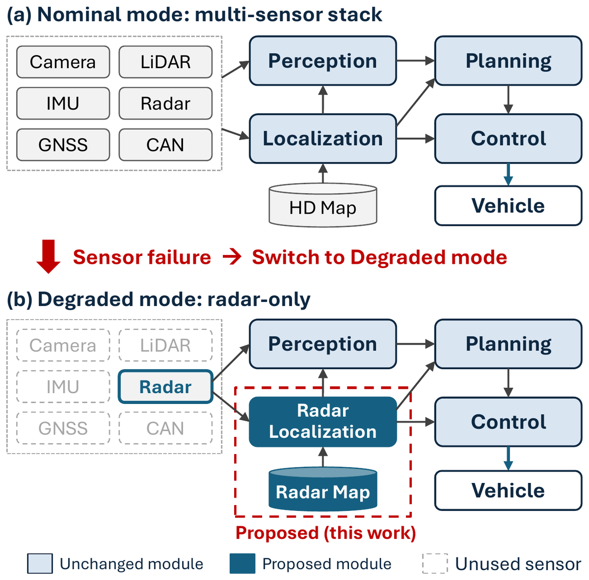
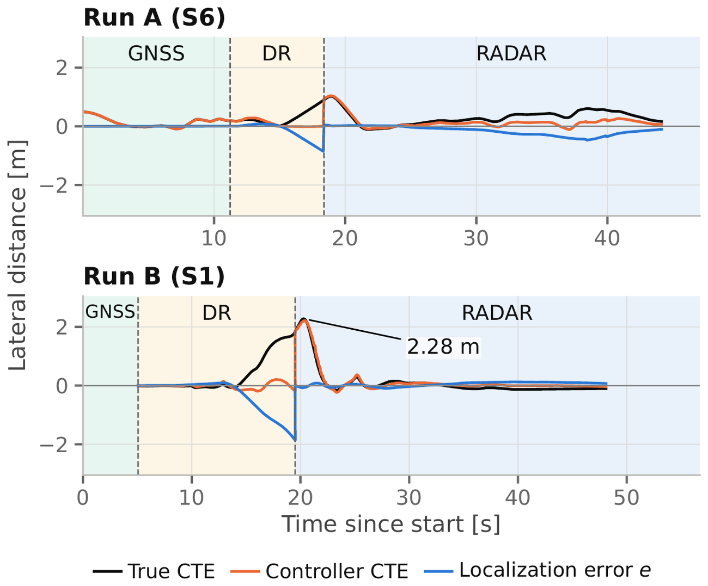

Abstract
Sensor failures can interrupt autonomous driving systems that rely on multiple sensors. This paper proposes a degraded driving mode supported by a single four-dimensional (4D) imaging radar. The experiments validate radar-only vehicle-state estimation within an existing driving stack. The estimator matches radar scans to a fixed prior map and couples Doppler motion estimates across recent states. Evaluation covers localization accuracy, temporal stability, closed-loop control and component removal. A passenger car completed the evaluated segments on seven road types without intervention at a proving ground. Two selected completed transitions with a real-time kinematic positioning reference had maximum lateral localization errors of 0.478 m and 0.130 m; the former exceeded the 0.44 m reference line for 0.70 s. Within-mode checks found no pose step mismatch above 0.1 m across analysis spans totalling 6.08 km. Control metrics varied with road type and speed. The results provide an empirical assessment of the tested conditions, without establishing autonomous fault recovery or a validated operating envelope.

Introduction
Autonomous driving stacks combine GNSS, IMU, LiDAR and cameras, and a sensor failure can interrupt planning and control. A fail-operational degraded mode should preserve the essential functions needed for lane keeping, deceleration and a safe stop. Enabling a sensor already on the vehicle to perform several functions through software offers an alternative to adding redundant hardware. Radar directly measures range and relative velocity, is insensitive to illumination, and is robust in adverse weather.
Radar ego-motion estimation and mapping are well established, prior-map localization has achieved decimetre-level accuracy on recorded logs, and radar-based closed-loop navigation has been demonstrated on other platforms. Three questions remain for an on-road passenger car. First, radar-only vehicle-state estimation needs validation inside an existing perception–planning–control stack rather than on recorded data. Second, control requires localization that is both accurate and temporally stable, because sparse scans, multipath and failed registration produce errors and discontinuities that reach steering directly. Third, the integration requires an empirical operational design domain (ODD) assessment that reports performance on specific road types and at tested speeds.
- Closed loop Radar-only closed-loop driving with an existing on-road stack: radar-only MODT and vehicle-state estimates from a single 4D radar and prior radar map maintain driving on urban roads, a roundabout, a highway and a GNSS-shadowed section. Two selected completed demonstrations show recovery after manually commanded state-source transitions; they do not establish a transition success rate.
- Localizer Doppler-coupled fixed-lag prior-map localization validated in closed loop. The estimator adapts an inherited Doppler–window structure to a fixed map; offline component removal examines relative error and severe estimation failures.
- ODD An empirical ODD assessment that jointly reports per-road-type outcomes, tested speeds, errors relative to the localization reference line, and observed degradation and replay failures. These observations do not define validated operating limits.
Out of scope. Map building is not claimed as a contribution, and the registration algorithm itself is inherited. Fault detection, automatic transition and integrity monitoring lie outside the validated scope — every trial used a manually commanded state-source selection.
Method
Architecture
A transition to degraded mode switches perception to radar-only MODT while retaining the existing planning and control modules.
One interface changes
Radar localization runs continuously at 20 Hz, including during nominal operation. Its vehicle-referenced, latency-compensated output enters a bridge that holds the latest state at 100 Hz, and a selector supplies either the fused or the radar state at 50 Hz as (x, y, ψ, vx, vy, ω). An external HMI signal changes the source without re-initialization.
The stack does not know
Planning and control do not read the source flag, so the actual path-tracking error measures the effect of switching sources. GNSS supplies the initial pose once at start-up; thereafter degraded-mode state estimation uses no LiDAR, camera, IMU, GNSS or CAN measurement. CAN carries actuator commands and instrumentation only.
Prior radar map and radar-only localization

The map
Radar scans from 74 sessions were placed in a common frame using INS/GNSS poses. A single ICP refinement pass against an earlier map used at most five iterations, bounded by 0.25 m and 0.5°. A 0.35 m voxel consensus retained locations observed in at least two sessions, producing 51 646 map points. Each 5 m voxel stores an RCS-weighted mean and covariance, with shrinkage and eigenvalue bounds preventing degenerate voxels from being over-weighted. The map is area-wide, so routes need not be taught individually.
The front end
Preprocessing keeps returns within 1–100 m, ±5° elevation and ±60° azimuth, and retains only the nearest return per 0.5° azimuth bin, because a more distant return at the same azimuth is often a multipath reflection. RANSAC and iteratively reweighted least squares estimate the mounting-point velocity from static returns; the non-holonomic constraint then yields longitudinal speed and yaw rate, so all degraded-mode motion information comes from the single radar.
The window
Registration starts from a constant-velocity prediction and minimizes geometric and Doppler residuals jointly against the fixed map, with λ = 0.7 weighting the two terms and a 10° yaw innovation gate rejecting bad registrations. A fixed-lag window of 21 states is optimized with g2o. No vertex is fixed: the fixed-map unary provides the reference, unlike an odometry window that anchors its first vertex, and earlier registrations keep constraining the absolute pose when the newest one is weak.
The newest vertex is referenced to the radar mounting point, so a lever-arm transform converts it to the rear-axle centre. The scan timestamp lags the observation by 0.113 s, calibrated in August and not retuned on the evaluation runs; the localizer subtracts this offset and publishes a state predicted forward with a constant turn rate and velocity model at about 20 Hz.
Test site and operational design domain
All runs took place at K-City, an autonomous-driving proving ground in Hwaseong-si, Republic of Korea.

The seven road types are laid over four domains of the course. The urban block grid and its arterials carry lane keeping and the right- and left-turn scenarios; the roundabout and the expressway section are driven as their own scenarios; and the roofed corridor is the GNSS-shadowed section. The composite segment chains all of them into a single 4.06 km drive.
Speed limits were 50 km/h on urban sections and 100 km/h on the highway. The speeds below describe the tested envelope, not a validated operating limit.
- Urban Block grid and multi-lane arterials, 535 × 145 m
- Highway Expressway section, 939 m
- Shadow zone Roofed corridor, 135 m
- Roundabout 67 m across
North is to the right; each magnified panel carries its own scale bar. Satellite imagery: VWorld, Ministry of Land, Infrastructure and Transport, Republic of Korea.
Road types
The seven road types of the ODD assessment, with the maximum speed reached on each.
Experiments
A drive-by-wire mid-size passenger car was tested on public-road-type courses at K-City, with a forward-mounted Continental ARS548 4D radar (20 Hz, about 284 points per scan) and a prior map built in separate sessions. A NovAtel OEM7 INS/GNSS provided the reference; absolute pose accuracy was evaluated only with RTK-fixed positioning. Localization took 2–3 ms per scan on the vehicle computer, and the median state-message age at the controller input was 33 ms. The lateral error reference is the 0.44 m alert limit for a mid-size vehicle from Reid et al.; it contextualizes the results without implying integrity assurance.
Driving outcomes
| ID | Road type | Max.km/h | Dist.km | Outcome | Lat. err. / > 0.44 m |
|---|---|---|---|---|---|
| S1 | Urban lane keeping | 50 | 0.44 | completed | — |
| S2 | Urban right turn | 27 | 0.10 | completed | — |
| S3 | Urban left turn | 27 | 0.13 | completed | — |
| S4 | Roundabout | 16 | 0.13 | completed | — |
| S5 | Highway | 78 | 0.67 | completed | — |
| S6 | GNSS shadow | 49 | 0.71 | completed | — |
| S7 | Composite segment | 100 | 4.06 | completed | — |
| S1 | Lane keeping (Run B) | 50 | 0.45 | completed* | 0.130 m / 0 s |
| S6 | GNSS shadow (Run A) | 49 | 0.40 | completed | 0.478 m / 0.70 s |
Last column: maximum lateral localization error and the time spent above the 0.44 m reference line; — means no RTK-fixed pose reference was available. *Run B had a transient departure (maximum true cross-track error 2.28 m) and recovered without intervention.
Transition continuity

Dead-reckoning drift accumulates while the controller tracks the path relative to an erroneous state. After switching to radar, true cross-track error peaked at 1.02 m and 2.28 m in Runs A and B; both recovered below 0.3 m within 1.6 s without intervention. Run B exceeded the 2 m departure threshold despite completing the run. The relation controller CTE = true CTE + e held with a residual RMS of 1–2 cm. The 95th-percentile true cross-track error during radar operation was 0.57 m and 0.17 m for Runs A and B, compared with 0.19–0.35 m in six separate RTK-referenced LiDAR particle-filter runs.
Localization accuracy
| Source / run | Dur.s | Lat. maxm | Lat. p95m | > 0.44 m% | 2D RMSEm |
|---|---|---|---|---|---|
| Radar A (S6) | 46.9 | 0.478 | 0.395 | 1.49 | 0.297 |
| Radar B (S1) | 56.6 | 0.130 | 0.122 | 0 | 0.266 |
| PF+CAN S1 | 57.3 | 0.091 | 0.061 | 0 | 0.193 |
| PF+CAN S5 | 80.4 | 0.127 | 0.104 | 0 | 0.319 |
| PF+CAN S6 | 115.6 | 0.113 | 0.093 | 0 | 0.219 |
| Radar run | Long. RMSEm | Long. biasm | Heading RMSEdeg | Speed RMSm/s |
|---|---|---|---|---|
| A (S6) | 0.244 | −0.185 | 0.374 | 0.0168 |
| B (S1) | 0.254 | −0.143 | 0.643 | 0.0306 |
Radar spans include observer operation. Run A exceeded 0.44 m for 0.70 s near the roundabout; Run B remained below it. Their lateral p95 values of 0.395 / 0.122 m were respectively above and below the cited 0.15 m accuracy requirement, so these two runs do not establish compliance with the full localization requirements. Pooled 2D RMSE was 0.28 m. Longitudinal errors were substantial, consistent with weak along-track observability. Absolute accuracy is below leading prior results, although differences in sensors and conditions preclude direct ranking.
Temporal stability
| Source | Runs | Spankm | Max. stepcm | > 0.1 mcount | Events/km |
|---|---|---|---|---|---|
| Radar | 7 | 6.08 | 5.1 | 0 | 0.00 |
| PF+CAN | 7 | 6.33 | 13.3 | 5 | 0.79 |
| LiDAR-only | 4 | 0.61 | 23.2 | 74 | 122 |
Radar had no step mismatch above 0.1 m across spans totalling 6.08 km. The bound concerns measured step mismatch, not every possible discontinuity; the LiDAR-only reference uses a different implementation, session and shorter route.
Control-side stability
| ID | Steer. ratedeg/s | Steer. jitterdeg | Lat. acc.m/s² | Lat. jerkm/s³ |
|---|---|---|---|---|
| S1 | 9.46 / 9.97 | 0.235 / 0.143 | 0.437 / 0.422 | 0.727 / 0.805 |
| S2 | 52.91 / 52.68 | 0.480 / 0.461 | 0.439 / 0.435 | 0.712 / 0.658 |
| S3 | 46.85 / 42.40 | 0.958 / 0.614 | 0.531 / 0.506 | 0.769 / 0.661 |
| S4 | 52.46 / 56.38 | 0.533 / 0.776 | 0.884 / 0.930 | 0.737 / 0.936 |
| S5 | 4.85 / 4.77 | 0.157 / 0.194 | 0.148 / 0.173 | 0.579 / 0.632 |
| S6 | 25.81 / 25.74 | 0.523 / 0.486 | 0.790 / 0.811 | 0.705 / 0.741 |
| S7 | 33.16 / 33.90 | 0.444 / 0.449 | 0.647 / 0.641 | 0.838 / 0.859 |
| Median | 33.16 / 33.90 | 0.480 / 0.461 | 0.531 / 0.506 | 0.727 / 0.741 |
The ordering varies by road type and metric, so the results do not establish control equivalence or a consistent advantage. On S5, steering-rate RMS was 4.85 / 4.77°/s over 54.35 / 69.90 s of eligible radar / PF+CAN data; within the short 70–90 km/h subsets it was 2.65 / 2.00°/s, so an aggregate comparison does not remove the high-speed difference. The 20 Hz analysis cannot assess variations above 10 Hz.
Component removal
| Change | Catastr./17 | n∆ | ns | Med. ∆m | pHolm |
|---|---|---|---|---|---|
| N = 1, CV binary off | 4 | 17 | 13 | +0.015 | 0.112 |
| Doppler reg. weight off | 3 | 17 | 14 | +0.938 | 0.0019 |
| Both of the above | 14 | 17 | 3 | +0.595 | 0.0019 |
| Doppler velocity unary off | 14 | 14 | 3 | +0.675 | 0.0044 |
| NHC yaw-rate term off | 9 | 11 | 8 | −0.017 | 0.578 |
| Yaw gate: 10° → 180° | 0 | 17 | 17 | +0.008 | 0.578 |
Catastrophic: |∆| > 10 m or no valid scored RMSE. Removing Doppler registration weighting worsened all 17 finite pairs; removing the velocity unary produced 14 catastrophic outcomes. These findings support the inherited Doppler constraints, not a new registration algorithm. Cold-start open-loop replay against a single-point GNSS reference provides exploratory sensitivity evidence, not absolute accuracy or closed-loop reliability estimates.
Observed degradation and limits
Run A’s lateral error reached 0.478 m near the south-western roundabout and exceeded 0.44 m for 0.70 s before recovering. Sparse lateral structure is a possible explanation, but correspondence counts were not analysed there. The completed run illustrates localized degradation, not proof of its mechanism.
The evidence is limited to one vehicle, one proving ground and clear daytime conditions, with one evaluated run per road type, two selected accuracy runs and one run reaching 100 km/h. Control metrics depend on road type and speed, and the replay study uses a noisy reference. Future work will address integrity monitoring, automatic transition, stronger map constraints in weakly observable areas, repeated trials, and adverse-weather and night-time validation.
Videos
Every clip shows all four camera angles at once — forward (F), rearward (R) and the two cabin views (SL, SR) — assembled from the synchronised originals without reframing or cropping. Faces and the recorder's burnt-in text are masked.
Each clip is badged with the scenario it belongs to, the localization source that was driving the vehicle, and the peak speed reached in that run. All three come from the log recorded alongside the footage, so the filters below select real runs rather than clip metadata. Two clips sit outside the seven scenarios and are badged accordingly.
—
No recording matches this filter.
BibTeX
@inproceedings{driving_on_radar_alone,
title = {Radar-Only Fail-Operational Autonomous Driving:
Closed-Loop On-Road Validation with 4D Radar Localization},
author = {Anonymous},
booktitle = {Under review},
year = {2027}
}